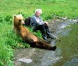

What's with norquay.com redirecting to cloudline.org?
Several people reading this blog have asked about cloudline.org, the website they get redirected to if they go to norquay.com rather than norquay.com/blog. Norquay.com is my personal website. I used to host and run a website here for my friends Charlie Russell and Maureen Enns who study bears. It did very well, so now they're running the website themselves. I encourage you to wander around it. It's essentially a weblog with pictures from a couple of people who spend their lives with grizzly bears.. It got started long before blogging became so fashionable. Quite a different perspective on life than the usual high tech world. Balance.[ This entry made sense when my blog was hosted on my personal web site; but now that it's moved, this entry seems a little odd. But cloudline.org is still very cool ]
| June 17, 2005 |